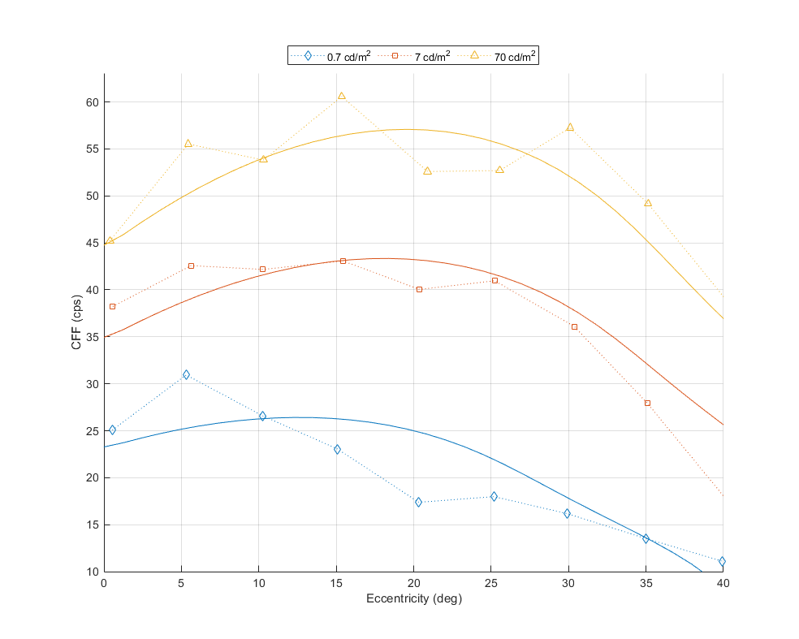
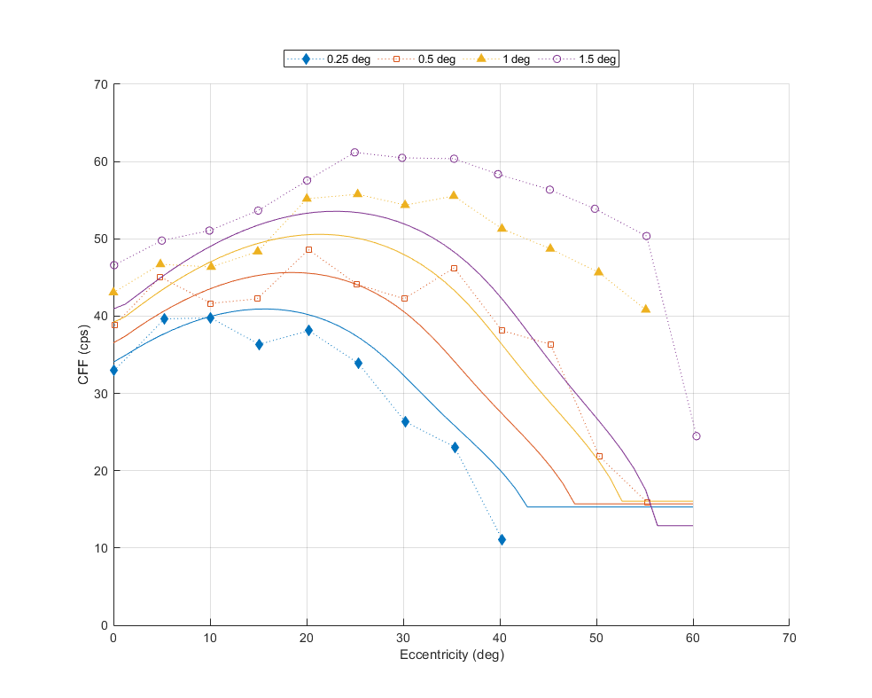
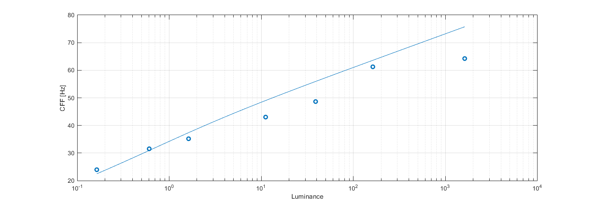
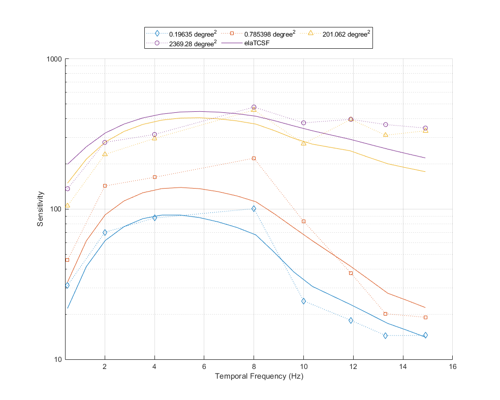
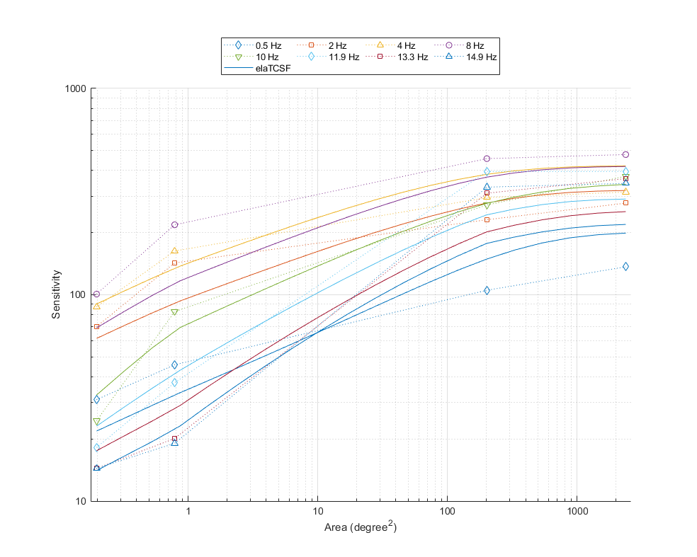
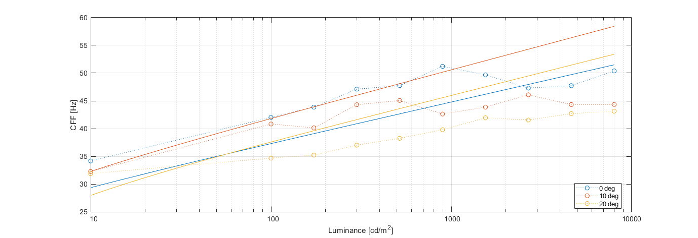
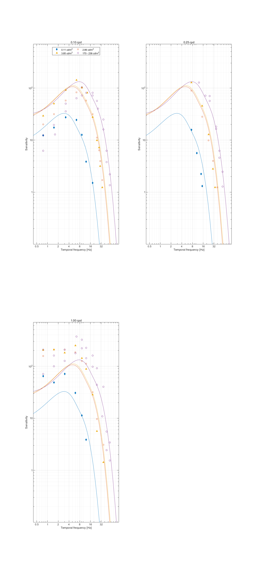

5-dimensional CSFs: spatial and temporal frequency, luminance, size and eccentricity
Fitting error
Model parameters
elaTCSF
Parameters for TCSF component:
p.E_thr = 6.66977;
p.beta = 4.31804;
p.elTCSF.ecc_k1 = 0.0295485;
p.elTCSF.tcsf_ecc_k1 = 0.0450372;
p.elTCSF.tcsf_lum_k1 = 0.214017;
p.elTCSF.TCSF_xi = 148.072;
p.elTCSF.TCSF_tau = 0.00273026;
p.elTCSF.TCSF_kappa = 2.22608;
p.elTCSF.TCSF_zeta = 0.733108;
Legend
To keep the plots legible, only up to 3 models are plotted.
↸Dataset: [hartmann1979] Hartmann et al. 1979
CFF as a function of eccentricity at different luminance levels

CFF as a function of stimulus diameter

↸Dataset: [deLange1958b] De Lange 1958
CFF for white light as a function of luminance

↸Dataset: [oursVRR2024] Ours 2024 VRR Flicker Dataset
Sensitivity vs. Temporal Frequency

Sensitivity vs. Area

↸Dataset: [hvei_cff2022] HVEI CFF 2022
CFF for white light as a function of luminance and eccentricity

↸Dataset: [snowden1995] Snowden et al. 1995
Temporal contrast sensitivity at different spatial frequencies and luminance levels
